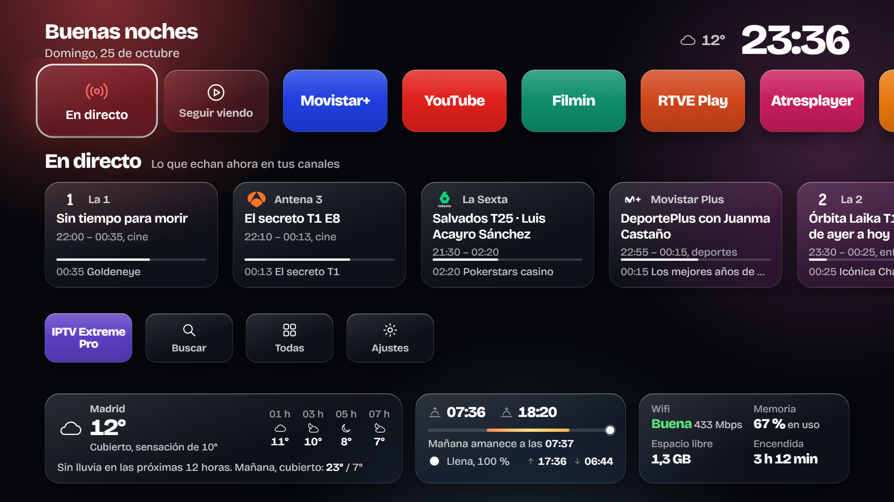
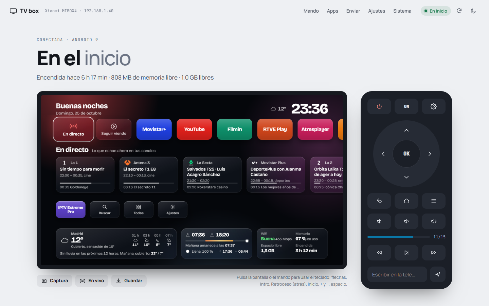

Calcula una hora la primera vez. La mayor parte se va en instalar las herramientas en el PC; la caja se prepara en diez minutos.

Qué necesitas
- Una caja o tele con Android TV 8 o posterior.
- Un PC con Windows en la misma wifi que la caja. Los comandos son de Windows; en Linux o Mac funcionan igual cambiando las rutas.
- El mando de la caja.
- Solo si tu caja no deja conectarse por red a la primera: un cable USB macho-macho (tipo A en los dos extremos). En la Mi Box 4 me hizo falta.
No hace falta root ni desbloquear nada. Todo lo que cambias se deshace en un minuto (lo explico al final).
1. Activa las opciones de desarrollador en la caja
- En la caja, entra en Ajustes → Preferencias del dispositivo → Información.
- Baja hasta Compilación y pulsa OK siete veces seguidas. Verás un aviso: «Ahora eres desarrollador».
- Vuelve atrás. Ahora aparece Opciones para desarrolladores dentro de Preferencias del dispositivo.
- Entra y activa Depuración USB.
Apunta la IP de la caja: está en Ajustes → Red e Internet, pulsando sobre tu wifi. Algo como 192.168.1.40. Te recomiendo reservarla en el router para que no cambie; en casi todos los routers está en el apartado DHCP, asociando la IP a la MAC de la caja.
2. Instala ADB en el PC
ADB es la herramienta oficial de Android para hablar con el aparato desde el ordenador. Abre una terminal (PowerShell) y escribe:
winget install Google.PlatformTools
Cierra la terminal y abre otra. Comprueba que responde:
adb version
Si dice que no encuentra adb, búscalo en %LOCALAPPDATA%\Microsoft\WinGet\Packages\ (carpeta que empieza por Google.PlatformTools) y usa la ruta completa, o añade esa carpeta al PATH.
3. Conecta el PC con la caja
Prueba primero por red, con la IP que apuntaste:
adb connect 192.168.1.40:5555
La tele te preguntará «¿Permitir la depuración USB?». Marca Permitir siempre desde este ordenador y acepta.
Si sale «connection refused» (me pasó con la Mi Box 4), la caja todavía no escucha por red. Hay que abrirle la puerta una vez por cable:
- Conecta la caja al PC con el cable USB macho-macho.
adb devicesy acepta el aviso en la tele.adb tcpip 5555- Quita el cable y repite el
adb connectde arriba.
En mi caja el puerto siguió abierto después de reiniciarla, así que el cable solo hizo falta esa vez.
Comprueba que todo va bien:
adb devices
Tiene que aparecer la IP de la caja con la palabra device al lado.
4. Consigue el APK
La forma fácil: descarga tvbox_customize.apk de la página de versiones del repositorio y salta al paso 5.
Si prefieres compilarlo tú, primero bájate el proyecto. Con Git:
git clone https://github.com/1974julgebass/tvbox_customize.git
O desde la página del repositorio, con Code → Download ZIP.
Para compilar necesitas tres cosas:
| Herramienta | Cómo instalarla |
|---|---|
| Java 17 | winget install EclipseAdoptium.Temurin.17.JDK |
| Android SDK (solo las herramientas de línea de comandos) | Descarga Command line tools only de developer.android.com/studio, descomprímelas en C:\Android\sdk\cmdline-tools\latest y ejecuta C:\Android\sdk\cmdline-tools\latest\bin\sdkmanager "platforms;android-34" "build-tools;34.0.0" |
| Gradle 8.9 | Descarga el zip de gradle.org/releases y descomprímelo en C:\Android\gradle-8.9 |
No necesitas Android Studio. Acepta las licencias del SDK una vez (responde y a todo):
C:\Android\sdk\cmdline-tools\latest\bin\sdkmanager --licenses
Si Gradle se queja de que no encuentra Java, crea la variable de entorno JAVA_HOME apuntando a la carpeta del JDK (algo como C:\Program Files\Eclipse Adoptium\jdk-17...) y abre otra terminal.
Crea el archivo android\local.properties con la ruta del SDK (fíjate en las barras dobles):
sdk.dir=C\:\\Android\\sdk
Y compila desde la carpeta del proyecto:
C:\Android\gradle-8.9\bin\gradle.bat -p android assembleDebug
La primera vez tarda unos minutos porque descarga dependencias. El APK queda en android\app\build\outputs\apk\debug\app-debug.apk.
La interfaz de la pantalla de inicio está en la carpeta launcher/ (HTML, CSS y JavaScript). Cada vez que compilas, se copia dentro del APK. Si cambias algo ahí, vuelve a compilar e instalar.
5. Instala la app en la caja
adb install -r tvbox_customize.apk
(O app-debug.apk, si lo compilaste tú.)
Debe responder Success. Si actualizas más adelante, el mismo comando sirve: conserva tus favoritas, avisos y móviles emparejados.
6. Hazla tu pantalla de inicio
adb shell cmd package set-home-activity es.casa.inicio/.MainActivity
adb shell pm disable-user --user 0 com.google.android.tvlauncher
El segundo comando desactiva el inicio de Google. Sin él, el botón Inicio del mando sigue llevándote al de Google aunque hayas elegido otro. No se borra nada: se queda dormido y lo recuperas cuando quieras.
Si tu caja no es de Google TV clásico y el inicio se llama distinto, averigua cuál es con:
adb shell cmd package resolve-activity -a android.intent.action.MAIN -c android.intent.category.HOME
7. Dale los permisos
Android no deja que una app normal se dé estos permisos a sí misma, pero tú sí puedes dárselos por ADB. Copia el bloque entero:
adb shell appops set es.casa.inicio GET_USAGE_STATS allow
adb shell cmd notification allow_listener es.casa.inicio/es.casa.inicio.Escucha
adb shell appops set es.casa.inicio SYSTEM_ALERT_WINDOW allow
adb shell settings put secure enabled_accessibility_services es.casa.inicio/es.casa.inicio.Accion
adb shell settings put secure accessibility_enabled 1
adb shell settings put secure screensaver_components es.casa.inicio/es.casa.inicio.Sueno
Para qué sirve cada uno:
| Permiso | Para qué |
|---|---|
| Uso de apps | Saber qué app usaste por última vez y abrir la pantalla ahí. |
| Notificaciones | Apuntar lo que estás viendo en cada app («Seguir viendo»). Solo lee el título de lo que suena; no guarda nada fuera de la caja. |
| Mostrar encima | Los avisos flotantes: un programa que empieza, el temporizador, una app instalada desde el móvil. |
| Accesibilidad | Los botones de Reiniciar y Apagar de los ajustes. No lee la pantalla. |
| Salvapantallas | Usar el salvapantallas propio, con la hora y tus canales. |
Antes de cambiar el salvapantallas, si quieres poder volver al de antes, apunta cuál tienes:
adb shell settings get secure screensaver_components
8. Pruébala
Pulsa el botón Inicio del mando. Tiene que aparecer la pantalla nueva. Si ves la de Google, revisa el paso 6.
La primera vez que uses el mando desde el móvil (o instales una app), la tele preguntará otra vez «¿Permitir la depuración USB?»: es la propia caja pidiéndose permiso a sí misma. Marca Permitir siempre y acepta. Lo cuento con calma en el manual de configuración.
El panel del PC (opcional)
El proyecto trae también un panel web para manejar la caja desde el ordenador: ver la pantalla, usar el teclado como mando, instalar o desactivar apps, cambiar ajustes y ver el estado.

Para usarlo necesitas un servidor con PHP 8 en el mismo PC; yo uso XAMPP.
- Copia la carpeta del proyecto dentro de
C:\xampp\htdocs\, por ejemplo comotvbox. Vale cualquier carpeta. - Copia
.env.examplea.envy rellena la IP de la caja y la ruta completa deadb.exe:
ini
TV_HOST=192.168.1.40
TV_PORT=5555
ADB_PATH=C:\ruta\a\platform-tools\adb.exe
- Arranca Apache y abre
http://localhost/tvbox/.
El panel solo responde a peticiones del propio PC. Si lo abres desde otro aparato de la red verás «Solo desde este PC». Es a propósito: el panel puede instalar y desinstalar apps sin pedir contraseña.
Si algo no va
adb connect dice «failed to authenticate». Mira la tele: está esperando que aceptes el aviso de depuración.
La caja cambió de IP. Vuelve a hacer adb connect con la nueva y, si usas el panel, cámbiala en .env. Mejor reservarla en el router.
El botón Inicio abre la pantalla de Google. El inicio de Google sigue activo. Repite el pm disable-user del paso 6.
«Seguir viendo» no aparece nunca. Falta el permiso de notificaciones del paso 7. Ojo: solo funciona con apps que publican lo que reproducen (YouTube, Filmin, VLC sí; algunas apps de TV no).
Los botones Reiniciar y Apagar no hacen nada. Falta el permiso de accesibilidad: repite las dos líneas de enabled_accessibility_services y accessibility_enabled del paso 7.
Volver a como estaba
Todo es reversible. Para dejar la caja como venía de fábrica:
adb shell pm enable com.google.android.tvlauncher
adb shell settings put secure screensaver_components com.google.android.backdrop/.Backdrop
adb shell settings put secure enabled_accessibility_services ""
adb uninstall es.casa.inicio
En la tercera línea, si tenías otros servicios de accesibilidad activos, ponlos en lugar de las comillas vacías. Y en la segunda, usa el salvapantallas que apuntaste en el paso 7 si era otro.
Por último, si quieres cerrar la puerta de red de ADB, desactiva Depuración USB en las opciones de desarrollador.